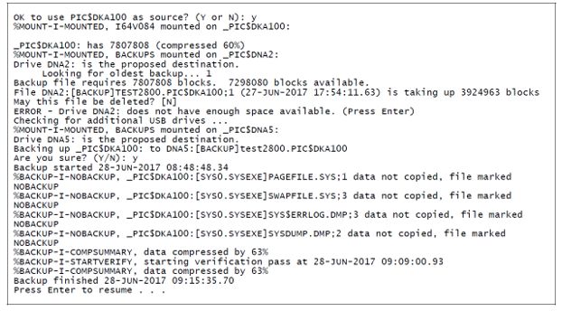

FSC Backup and Restore
Purpose and Application
Purpose
To define a work instruction for describing the new scheme and procedures for backing up the FSC (Forming Supervisory Computer) to a spare drive or a USB memory device. Backups should be done on a regular basis to protect against extended FSC downtime. Also described are the restore procedures for performing an emergency recovery by booting from the spare drive, or by loading a backup image from a USB device to a replacement hard drive in the event both the operating and backup drives have failed.
Application
This work instruction applies to all Space Plants that has FSC and Space IS Machines.
It is highly recommended that you always use the server console terminal for making the backups. Following this practice avoids the risk that the backup will be corrupted. Using a telnet session directly to the FSC (instead of the Integrity console) introduces the possibility that the session could be interrupted by network or PC problems. That kind of interruption immediately stops the backup before it can be completed and leaves you with a corrupted (unusable) result.
Safety
 |
 |
Procedure
- Backup and Recovery Scheme (FSC Version 6.1-0 or Later)
- Two new backup options are available to supplement the magnetic tape option
for plants with Integrity server based FSCs. The new options are located within
the legacy FSC Utilities Menu that can be accessed from either the console
terminal or via network telnet protocol. These options provide the following
functionality:
- The operating hard drive can be cloned to the spare hard drive. This can be done manually as often as desired to ensure up-to-date data on the spare drive. The Clone option will also work on Alpha Servers if an operating spare drive is available.
- The spare hard drive can be backed up onto USB flash drives. This is a unique capability of the Integrity server that is not available on earlier Alpha Servers.
- All FSCs that have been deployed on the Integrity platform contain a spare
hard drive which is intended to be the fastest way to get the FSC back into
operation in the event of a system hard drive failure. Therefore, frequent
cloning to the spare drive helps your plant ensure that:
- Operational data such as the active jobs and COM-SOC 2 boot assignments are as recent as possible.
- The spare drive is in good working condition just in case there is a failure.
- On a Combo system where the FSC is sharing the server with a PIC, the database for the PIC has a current backup on the spare drive.
- Hardware errors that might be noted during the clone procedure should be acted upon promptly by getting the malfunctioning drive checked out by your repair service provider and replaced before an unexpected shutdown occurs.
- In the severe situation where both hard drives have to be replaced and
reloaded, it will be necessary to boot to the Standalone Backup disk. The menu
on the Standalone Backup system allows restoring from either a tape or a USB
drive backup that was made as a safety contingency. The new USB backup
procedure uses the spare hard drive as the source and then performs a
verification to ensure that the backup is reliable.
- The procedure will check the spare hard drive to ensure that it has been cloned from the system hard drive within the past two days.
- This test ensures that the more important image on the spare drive is current.
- It is recommended to obtain between seven to ten USB drives (16GB should be
sufficient) so that you can use a different drive each day in rotation. If the
basic drive size is too small, the backup utility will tell you. Keep track of
the dates on which you use each drive so that you can always tell which was the
most recent (for a recovery), or which was the oldest (for the next backup).
- Conventional tags used to identify equipment status can be attached with the wire to a lanyard hole in the drive. You can log dates right on the tags when they are used for a backup. Tip: Write a warning on the tag that the drive should never be plugged into a PC to see what is on it. The PC will want to format the drive and that erases the backup(s) on it.
- You might be able to write an indelible ID number on the drives with a fine point felt marker. Keep a log book showing the date/time and ID number each time a backup is made. Tip: Store the drives in a container marked with the warning to never plug them into a PC due to possible erasure
- Two new backup options are available to supplement the magnetic tape option
for plants with Integrity server based FSCs. The new options are located within
the legacy FSC Utilities Menu that can be accessed from either the console
terminal or via network telnet protocol. These options provide the following
functionality:
- Clone Backup Process:
- Log onto the console terminal with the username “fsc”. No password is required.
- Select option 4 (Utilities) from the FSC Main Menu and press Enter (Return on DEC keyboards).
- Select option 1 (Backup) from the FSC Utilities Menu and press Enter.
- Select option 1 (Clone system to standby disk) from the FSC Backup Options Menu and press Enter.
- Type in a password for a user that is authorized to make backups. Authorized users are set up using MOC.
- Acknowledge the prompt listing the source and destination drive to start the
backup.
Figure 3. Figure 1: FSC Backup Options Menu 
- Monitor the backup for fatal error messages that indicate that the backup is faulty. A fatal message will have “-F-“ in the middle of the all caps part of the message. Also look for any disk errors occurring during the backup. If these are excessive or increase during subsequent backups, contact your repair service provider to have the hard drives checked.
- If the FSC is on an Integrity server, the procedure tests and automatically
revalidates the entry in the Boot Manager Menu. This step is critical to
allowing the spare drive to boot. Become familiar with the normal messages
shown in Figure 2 so that you are
aware of what is happening since the word “failed” might cause unnecessary
concern.
Figure 4. Figure 2: Clone Backup – Normal Validation Messages 
- USB Backup Procedure:
The best time to make the USB backup is immediately after you have made a Clone backup. The USB procedure makes a backup of the image on the spare disk. If the spare disk has not been recently cloned from the operating disk, the USB procedure will require you to perform the Clone backup before allowing a backup to the USB drive. Use the following steps to access the Backup Options menu shown in Figure 1 and start the USB backup procedure:
- Log onto the console terminal with the username “fsc”. No password is required.
- Insert a USB flash drive that has at least 16GB capacity.
- Select option 4 (Utilities) from the FSC Main Menu and press Enter (Return on DEC keyboards).
- Select option 1 (Backup) from the FSC Utilities Menu and press Enter.
- Select option 2 (Back up standby disk to USB disk) from the FSC Backup Options Menu and press Enter.
- Type in a password for a user that is authorized to make backups. Authorized users are set up using MOC.
- The backup program will locate the spare (standby) drive and prompt “
OK
to use , andlt;
drivename
, andgt; as source? (Y or N):
” (See Figure 3 for example dialog.)
- Enter “Y” to confirm the backup source.
- If another spare drive is plugged in, the program will propose the one with the lowest drive ID number first. For example, drive DKA100 will be proposed before DKA200 if both positions have a spare drive installed.
- If you enter “N”, the program will check to see if there is another hard drive that is not the active system drive. If another drive is found, it will prompt you to use this alternative drive as the source. If you respond with “N”, this dialog will continue if there are more hard drives but if there are none it will simply display a message “Press Enter to resume...” pressing Enter returns you to the Backup Options Menu.
- Once the backup source is confirmed, the program will verify that the spare drive has been cloned from the operating drive within the past 48 hours. If it has, the USB backup will continue. If it has not, the program will request that you perform a Clone backup on the source drive and pause for you to press Enter to return to the Backup Options Menu.
- Allow the program to scan and identify a useable USB flash drive for the
backup.
- If a usable USB drive cannot be located, the program will display “Backup to USB not performed” and prompt you to press Enter to return to the Backup Options menu.
- If a USB drive is identified, the program will display “Drive DNA?:
is the proposed destination.”Note:
There will be a number where the ? is shown. Each drive will be assigned a different number.
- If the USB drive is not formatted, the program will format it for VMS if you type “y” at the prompt to approve this action.
- If the USB drive capacity is not sufficient to accept the expected backup file, the program will display a message advising you to use a larger drive.
- If the USB drive capacity is sufficient, but there is not enough free
space, the program will display a message showing the number of blocks
needed and the number available. It will also display the oldest backup
found and ask permission to delete this file to free up space.
- If you enter “N” to save a backup file from being deleted, the program will scan for another USB drive and, if found, display “Drive DNA?: is the proposed destination”
- If you enter “Y” to allow a backup file to be deleted, the program will again determine if the USB drive capacity is sufficient. This process will continue until there is enough space on the drive or you decide to save a backup file proposed for deletion.
- Once a USB drive is located which has sufficient capacity for the backup, the
program will display: “Backing up _PIC$DKA?00: to DNA?:[BACKUP]dnetname.
PIC$DKA?00 Are you sure? (Y or N):” Note:
The drive number IDs will appear where the ? is shown. The “dnet-name” is the DECnet node name of the server (if configured during installation).
- Enter “Y” to start the backup.
- After the backup has completed, the file created on the USB device will be
verified by comparing the file contents to the disk contents
- If there is an error, determine if the USB drive is defective by trying another USB drive.
- If you get the same errors with multiple USB drives, the hard drive may
be the problem. Contact your repair service provider to have the drive
checked.
Figure 5. Figure 3: Example Dialogue – Backup to USB 
Example Dialog NOTES:- The example is from a backup done on a development server (named TEST2800) so the drive IDs are different. The system was operating on the DKA800 drive.
- If “N” had been entered at the “source” prompt to use the DKA100 drive, the program would have identified the DKA700 drive as another option. DKA800 would not be a source option.
- Two USB flash drives were plugged in. DNA2 already contained 2 backups; DNA5 had no backups.
- It was decided not to delete the older backup file on DNA2 to free up space so the program checked and found that DNA5 was available and had sufficient capacity.
- The time required for the backup was about 28 minutes. The DKA100 drive had FSC software only. If the FSC shares the server with the PIC application (called a Combo system), the backup would take longer and generate a larger backup file. If the system utilizes OpenVMS 8.3, the file cannot be compressed so the file size and backup time will be significantly increased.
- Recovery Using the Spare Drive
If the operating drive fails, it will be necessary to boot from the spare drive. It is also recommended to boot from the spare drive if the operating drive is showing a steady increase in the number of disk errors during the Clone backups, to avoid an unexpected shutdown at an inconvenient time
- Log onto the console terminal with the username “fsc”. No password is required.
- Select option 4 (Utilities) from the FSC Main Menu and press Enter (Return on DEC keyboards).
- Select option 10 (Shutdown/Reboot System) from the Utilities Menu and press Enter.
- Select item 1 (Reboot system after shutting down) from the Shutdown System Menu and press Enter.
- Type in a password for a user that is authorized to perform a shutdown. Authorized users are set up using MOC.
- At the prompt “Are you sure [NO]?”, type a “y” (or “Y”) to confirm that you want to perform this reboot.
- To override the two minute delay, type a “0” (zero) for an immediate shutdown.
- Stay at the console and monitor the boot progress so that you can respond
immediately when the menu is displayed. You have only a few seconds to
intercept the timer countdown. If you miss this opportunity, let the system
continue to boot and try again from step 1.
- If the server is a rx2800, a System Menu will be initially displayed. (See Figure 4.) You must press the letter “b” when this menu is displayed to stop the timer and launch the Boot Manager Menu shown in Figure 5.
- If the server is a rx2660, the EFI Boot Manager Menu will be initially
displayed. (See Figure 6.) You
must press the down arrow when this menu is displayed to stop the timer.
Figure 6. Figure 4: rx2800 – Initial Menu Displayed at Boot Up 
Figure 7. Figure 5: rx2800 – Boot Manager Menu 
Figure 8. Figure 6: rx2660 EFI Boot Manager Menu 
- Use the arrow keys to position the highlight on the option for the spare disk
- The first entry in the Boot Manager Menu is the default and should be the drive that has malfunctioned. Locate the spare drive further down in the list, usually the second entry and the one labeled “Alternate boot to…”
- When the menu highlight is on the spare disk option, press the Enter key to start the boot on that disk.
- If the server is a Combo system shared with the PIC, it will be necessary to log onto the PIC Backup account and perform a database restore. If the database restore is not done, the PIC database will likely be corrupt which will cause issues with getting the PIC to work correctly.
- Contact your repair service provider to have the failed disk replaced as soon as
possible. Note:
You can use the Clone backup procedure in Section 4 to clone the spare disk back to the empty replacement disk to resynchronize them. If you are booted to the former spare drive, it is considered the data source for the clone.
- Troubleshooting Tip: If the clone has not been performed recently enough, an active job shown by MOC may be incorrect. To fix this, tell MOC to take the Job Off but without doing a Save of the Job History. Then tell MOC to do a second Save. The second Save will have all the settings for the active job running on the machine and will create or update the Job History on the FSC.
- Recovering Using a USB Drive
- The following are two situations where it may become necessary to perform a restore from a USB backup:
- If the system drive begins failing, it may corrupt the spare drive during the clone process. Then when you try to use the spare drive, it has similar issues.
- A severe mechanical bump to the server can cause the server to begin logging errors when the affected areas of the drives are accessed. Eventually, both drives may fail in succession.
Note:
Before starting this procedure, review step 8 in Section 6 to determine the appropriate key to press to interrupt the automatic boot process based on your server type (rx2800 or rx2660).
- Use the console terminal of the FSC and log onto the Management Port as user “Oper” (password is “console”).
- Ensure that the server power is on. (The power button will be green.)
- Insert the Standalone Backup DVD (PCS-0397) into the optical drive.
- Type “co” at the Management Port menu to start the console.
- Determine the state of the server
- If the server is in the Halted state, you will typically see the following
report on the screen followed by the Halt prompt. If this is case, simply
press the Enter key to attempt a boot up.
SYSTEM SHUTDOWN COMPLETE
**** Primary HALTED with code HWRPB_HALT$K_REMAIN_HALTED
**** Hit any key to cold reboot ****
P00, andgt;, andgt;, andgt;
- If the FSC software is actually running but is corrupted, use the FSC account menu to access the Utilities Menu and perform a reboot.
- If you cannot determine the state, hold the power button in for about 10 seconds to force the server to turn off and then press the power button to turn it back on.
- If the server is in the Halted state, you will typically see the following
report on the screen followed by the Halt prompt. If this is case, simply
press the Enter key to attempt a boot up.
- Stay at the console and monitor the boot progress so that you can respond
immediately when the menu is displayed. You have only a few seconds to
intercept the timer countdown. If you miss this opportunity, let the system
continue to boot and try again from step 1.
- If the server is a rx2800, a System Menu will be initially displayed. You must press the letter “b” when this menu is displayed to stop the timer and launch the Boot Manager Menu. (Figures 4 , andamp; 5)
- If the server is a rx2660, the EFI Boot Manager Menu will be initially displayed. You must press the down arrow when this menu is displayed to stop the timer. (See Figure 6)
- Use the arrow keys to position the highlight on the option for the “Internal
Bootable DVD” in the Boot Manager Menu and press the
Enter key to start the boot on that disk. Note:
Do not plug in the USB flash drive until the DVD has booted up completely to the menu shown in Figure 7. Be patient, this can take 5 to 10 minutes.
Figure 9. Figure 7: Standalone Backup DVD Menu 
- When the DVD has booted up completely, insert the USB flash drive containing the
latest backup.Note:
If you are not certain which USB drive has the latest backup, DO NOT plug the USB drives into a Windows PC. Follow steps 9 and 10 to find the latest backup.
- If you are not certain which USB drive has the latest backup, you can plug in as many drives as there are ports in the server. If the plant has a Digi Edgeport serial interface, this device has four USB ports that can also be used if they are accessible
- Enter a “3” to select the “Load hard drive from
USB drive backup image” option. Then enter the drive ID of the
destination drive. (See Figure 8 for
example dialog.)
- The destination drive ID will typically be DKA700 or DKA800. Since the backups are made from the spare drive, you will see that drive ID in the name of the backup. You can load the backup on the drive that is normally the system drive.
- The load program will locate the backup file on the USB drive and display a confirmation prompt which includes the backup date. Enter “Y” to start the load.
- If you have multiple USB drives plugged in, the program will locate the first backup file on the first drive it finds. Note the date of this backup. Then enter “N” at the confirmation prompt to allow the program to find the next backup. Repeat this process to determine the dates associated with each backup. After reviewing all the dates, repeat the search with option “3” and when the latest backup is displayed again, enter “Y” at the prompt to start loading that backup.
- After the image has been restored, the program will validate the drive so that it can be booted.
- Enter a “9” to select the “Shut down this
system” option. When the shutdown is complete, a message will
displayed to press any key to start the boot up.
- If the drive you just loaded is the only bootable hard drive, it will
boot even if you restored the backup to the spare drive instead of the
system drive. After the system is stable, you can use the Clone backup
procedure in Section 4 to clone the system to the other drive and then do a reboot
to access the Boot Manager Menu and get the correct drive operating.Figure 8: Example Dialog – Restore from USB
1) Clone hard drive to hard drive
2) Save hard drive backup image to USB drive
3) Load hard drive from USB drive backup image
4) Install O‐I Software PCS‐0408 from this DVD
5) Save hard drive backup image to DAT tape
6) Load hard drive from DAT tape backup image
7) Execute DCL commands and procedures
8) Configure boot menu
9) Shut down this system
Enter CHOICE or ? for help: (1/2/3/4/5/6/7/8/9/?) 3
Destination drive: dka700
%MOUNT‐I‐MOUNTED, BACKUPS mounted on _DNA1:
Do you want to load _DNA1:[BACKUP]FSCISX.PIC$DKA700;1 (created 28‐JUN‐2017 16:14:55.69)? [Y]n
No backup found. (press Enter)
Process Space_INSTALLER logged out at 29‐JUN‐2017 09:31:53.09
Press Return to continue...
1) Clone hard drive to hard drive
2) Save hard drive backup image to USB drive
3) Load hard drive from USB drive backup image
4) Install O‐I Software PCS‐0408 from this DVD
5) Save hard drive backup image to DAT tape
6) Load hard drive from DAT tape backup image
7) Execute DCL commands and procedures
8) Configure boot menu
9) Shut down this system
Enter CHOICE or ? for help: (1/2/3/4/5/6/7/8/9/?) 3
Destination drive: dka700
Do you want to load _DNA1:[BACKUP]FSCISX.PIC$DKA700;1 (created 28‐JUN‐2017 16:14:55.69)? [Y]
Restoring up _DNA1:[BACKUP]FSCISX.PIC$DKA700;1 to _DKA700:
Are you sure? (Y/N): y
%MOUNT‐I‐MOUNTED, I64V084 mounted on _DKA700:
Restore started 29‐JUN‐2017 09:32:20.24
%BACKUP‐I‐STARTVERIFY, starting verification pass at 29‐JUN‐2017 09:56:31.86
Restore finished 29‐JUN‐2017 10:04:53.75
%MOUNT‐I‐MOUNTED, I64V084 mounted on _DKA700:
Validate EFI Boot Options list: Timeout = 7 secs.
‐‐‐‐‐‐‐‐‐‐‐‐‐‐‐‐‐‐‐‐‐‐‐‐‐‐‐‐‐‐‐‐‐‐‐‐‐‐‐‐‐‐‐‐‐‐‐‐‐‐‐‐‐‐‐‐‐‐‐‐‐‐‐‐‐‐‐‐‐‐‐‐‐‐‐‐‐‐‐‐
4 hp I64 OpenVMS PKA0.0A04‐A7EF‐191B‐B8EF ‐fl 0,0
DKA700 PCI(0|1|1|0) Sas(5000C500095AE25D,Lun0)
efi$bcfg: Option Failed. Fixing Boot Entry automatically.
efi$bcfg: Entry 4 Boot0005 removed.
efi$bcfg: DKA700 PCI(0|1|1|0) Sas(5000C500095AE25D,Lun0) (Boot0005) Option successfully added
‐‐‐‐‐‐‐‐‐‐‐‐‐‐‐‐‐‐‐‐‐‐‐‐‐‐‐‐‐‐‐‐‐‐‐‐‐‐‐‐‐‐‐‐‐‐‐‐‐‐‐‐‐‐‐‐‐‐‐‐‐‐‐‐‐‐‐‐‐‐‐‐‐‐‐‐‐‐‐‐
1 entries validated.
Process Space_INSTALLER logged out at 29‐JUN‐2017 10:05:02.58
- If the drive you just loaded is the only bootable hard drive, it will
boot even if you restored the backup to the spare drive instead of the
system drive. After the system is stable, you can use the Clone backup
procedure in Section 4 to clone the system to the other drive and then do a reboot
to access the Boot Manager Menu and get the correct drive operating.
- The following are two situations where it may become necessary to perform a restore from a USB backup:
- The USB drive DNA1 had only one backup on it. When the backup date was presented the first time, the prompt was answered with “n” so the program would search for another backup that might possibly have a later date. When no more backups could be found, the program returned to the menu.
- The restore was initiated a second time and this time the backup file proposed was approved for loading.
- After the image was restored to the drive, the program did a verification pass to ensure that the drive has the original copy correctly restored. Then the entry in the Boot Manager Menu was validated so that the drive will boot.
Required Training
Before performing this work instruction, applicable personnel must be trained by an authorized trainer on the required training contents listed in this document.
Equipment
FSC version 6.1-0 or later software.
PCS-0397 Standalone Backup DVD from 2016 or later. Space plants can make this DVD by following the instructions in Appendix A. Licensee plants should obtain the DVD from their Global Technical Assistance Account Manager.
Working optical drive in the FSC Integrity server.
USB attachable flash drive(s) with 16GB or greater capacity.
Definitions
- FSC
- Forming Supervising Computer – The server computer that connects to the Space Forming Machines
References
Document Classification
- Asset Protection and Stability
- Organization and Training
Appendix
Collaboration
|
Country Group |
Role |
Name |
|
Americas North |
Forming Electronics Specialist |
Dan Knuckles |
|
Europe |
Forming Electronics Leader |
Remko Beckers |
|
Central Europe |
Regional Leader Forming Electronics |
Ruud Bormans |
|
France - Spain |
Jean-Pierre Locato |
Jean-Pierre Locato |
|
Latin America |
IS Machine Leader |
Miguel Morales |
|
Engineering - Forming |
Associate Engineer |
Jose Gonzalez |
|
Global |
Global Forming Electronics Leader |
Franklin Barrios |
Revision History
| 2017-09-20 |
Originally Released as Process Control SOP-17-009 |
| 2022-05-09 |
Approved by Franklin Barrios, Global Leader FES Network. Moved to GMF Site as FES-03-101 |